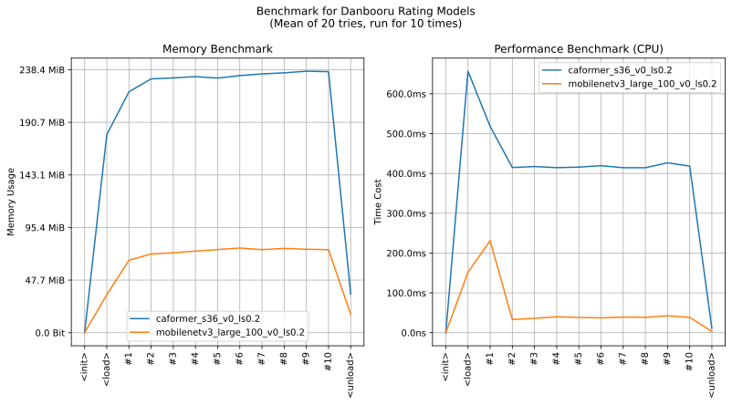

imgutils.validate.dbrating
- Overview:
A model for rating anime images into 4 classes (
general,sensitive,questionableandexplicit), based on danbooru rating system.The following are sample images for testing.
The following are sample images for testing. (WARNING: NSFW!!!)

This is an overall benchmark of all the rating validation models:
The models are hosted on huggingface - deepghs/anime_dbrating.
Note
This model is based on danbooru rating system, trained with 1.2 million images. If you need 3-level rating prediction, use
imgutils.validate.rating.anime_rating().Note
Please note that the classification of
general,sensitive,questionableandexplicittypes does not have clear boundaries, making it challenging to clean the training data. As a result, there is no strict ground truth for the rating classification problem. The judgment functionality provided by the current module is intended as a quick and rough estimation.If you require an accurate filtering or judgment function specifically for R-18 images, it is recommended to consider using object detection-based methods, such as using
imgutils.detect.censor.detect_censors()to detect sensitive regions as the basis for judgment.
anime_dbrating_score
- imgutils.validate.dbrating.anime_dbrating_score(image: str | PathLike | bytes | bytearray | BinaryIO | Image, model_name: str = 'mobilenetv3_large_100_v0_ls0.2') Dict[str, float][source]
- Overview:
Predict the rating of the given image, return the score with as a dict object.
- Parameters:
image – Image to rating.
model_name – Model to use. Default is
mobilenetv3_large_100_v0_ls0.2. All available models are listed on the benchmark plot above. If you need better accuracy, just set this tocaformer_s36_v0_ls0.2.
- Returns:
A dict with ratings and scores.
- Examples::
>>> from imgutils.validate import anime_dbrating >>> >>> anime_dbrating('general/1.jpg') ('general', 0.7508869767189026) >>> anime_dbrating('general/2.jpg') ('general', 0.7034655809402466) >>> anime_dbrating('general/3.jpg') ('general', 0.728887677192688) >>> anime_dbrating('general/4.jpg') ('general', 0.7404400110244751) >>> anime_dbrating('sensitive/5.jpg') ('sensitive', 0.7446154952049255) >>> anime_dbrating('sensitive/6.jpg') ('sensitive', 0.7514738440513611) >>> anime_dbrating('sensitive/7.jpg') ('sensitive', 0.768704354763031) >>> anime_dbrating('sensitive/8.jpg') ('sensitive', 0.8219676613807678) >>> anime_dbrating('questionable/9.jpg') ('questionable', 0.7267540693283081) >>> anime_dbrating('questionable/10.jpg') ('questionable', 0.7645740509033203) >>> anime_dbrating('questionable/11.jpg') ('questionable', 0.7216582894325256) >>> anime_dbrating('questionable/12.jpg') ('questionable', 0.7615436315536499) >>> anime_dbrating('explicit/13.jpg') ('explicit', 0.815083920955658) >>> anime_dbrating('explicit/14.jpg') ('explicit', 0.8321858644485474) >>> anime_dbrating('explicit/15.jpg') ('explicit', 0.8204999566078186) >>> anime_dbrating('explicit/16.jpg') ('explicit', 0.820833146572113)
anime_dbrating
- imgutils.validate.dbrating.anime_dbrating(image: str | PathLike | bytes | bytearray | BinaryIO | Image, model_name: str = 'mobilenetv3_large_100_v0_ls0.2') Tuple[str, float][source]
- Overview:
Predict the rating of the given image, return the class and its score.
- Parameters:
image – Image to rating.
model_name – Model to use. Default is
mobilenetv3_large_100_v0_ls0.2. All available models are listed on the benchmark plot above. If you need better accuracy, just set this tocaformer_s36_v0_ls0.2.
- Returns:
A tuple contains the rating and its score.
- Examples::
>>> from imgutils.validate import anime_dbrating_score >>> >>> os.chdir('docs/source/api_doc/validate/dbrating') >>> >>> anime_dbrating_score('general/1.jpg') {'general': 0.7508870363235474, 'sensitive': 0.11212056130170822, 'questionable': 0.06781744956970215, 'explicit': 0.06917501986026764} >>> anime_dbrating_score('general/2.jpg') {'general': 0.7034654021263123, 'sensitive': 0.15903906524181366, 'questionable': 0.06688199192285538, 'explicit': 0.07061357796192169} >>> anime_dbrating_score('general/3.jpg') {'general': 0.7288877964019775, 'sensitive': 0.1476859599351883, 'questionable': 0.060362350195646286, 'explicit': 0.06306383013725281} >>> anime_dbrating_score('general/4.jpg') {'general': 0.7404399514198303, 'sensitive': 0.10337048768997192, 'questionable': 0.08087948709726334, 'explicit': 0.07530999928712845} >>> anime_dbrating_score('sensitive/5.jpg') {'general': 0.055992450565099716, 'sensitive': 0.7446154356002808, 'questionable': 0.13191790878772736, 'explicit': 0.06747424602508545} >>> anime_dbrating_score('sensitive/6.jpg') {'general': 0.06458679586648941, 'sensitive': 0.7514738440513611, 'questionable': 0.10566363483667374, 'explicit': 0.07827574014663696} >>> anime_dbrating_score('sensitive/7.jpg') {'general': 0.07079866528511047, 'sensitive': 0.7687042951583862, 'questionable': 0.09974884241819382, 'explicit': 0.06074819341301918} >>> anime_dbrating_score('sensitive/8.jpg') {'general': 0.050435908138751984, 'sensitive': 0.8219675421714783, 'questionable': 0.0593985915184021, 'explicit': 0.06819795072078705} >>> anime_dbrating_score('questionable/9.jpg') {'general': 0.06569571048021317, 'sensitive': 0.1177448257803917, 'questionable': 0.726753830909729, 'explicit': 0.08980562537908554} >>> anime_dbrating_score('questionable/10.jpg') {'general': 0.06481882929801941, 'sensitive': 0.06922297924757004, 'questionable': 0.7645740509033203, 'explicit': 0.10138414055109024} >>> anime_dbrating_score('questionable/11.jpg') {'general': 0.06351721286773682, 'sensitive': 0.07683827728033066, 'questionable': 0.7216582894325256, 'explicit': 0.13798624277114868} >>> anime_dbrating_score('questionable/12.jpg') {'general': 0.05942752957344055, 'sensitive': 0.10584963858127594, 'questionable': 0.7615437507629395, 'explicit': 0.07317910343408585} >>> anime_dbrating_score('explicit/13.jpg') {'general': 0.060196295380592346, 'sensitive': 0.06751583516597748, 'questionable': 0.0572039857506752, 'explicit': 0.815083920955658} >>> anime_dbrating_score('explicit/14.jpg') {'general': 0.05398125201463699, 'sensitive': 0.06124086305499077, 'questionable': 0.0525919646024704, 'explicit': 0.8321859240531921} >>> anime_dbrating_score('explicit/15.jpg') {'general': 0.05922013148665428, 'sensitive': 0.06274889409542084, 'questionable': 0.057530902326107025, 'explicit': 0.8205001354217529} >>> anime_dbrating_score('explicit/16.jpg') {'general': 0.05683052912354469, 'sensitive': 0.06635929644107819, 'questionable': 0.05597696080803871, 'explicit': 0.8208332657814026}